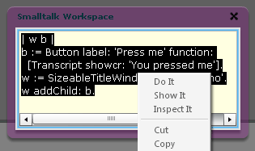

Smalltalk Ideal For... Vista? What The!
I left out a contender in the gooey post.
| w b |
b := Button label: 'Press me' function:
[Transcript showcr: 'You pressed me'].
w := SizeableTitleWindow open: 'Demo'.
w addChild: b.
If you’ve got Flash installed, you can have this running in just a few seconds.

- Start Vista Smalltalk.
- Right-click the dark grey background.
- Select SmalltalkWorkspace.
- Copy-and-paste the above code into the white window.
- Ctrl+A to select all the text.
- Right-click the text and select Do It.
Vista Smalltalk is incredibly precocious and capable. And yet, lots of things have changed and I couldn’t get hardly anything working from the tutorial. Instead of improving his tutorial and docs, the creator (Peter Fisk) is porting everything to the DLR. Uhm? Now I understand why all of you get so mad at me.
One really fascinating thing about this whole thing: the creator actually has a symmetric lisp dialect that corresponds to Smalltalk. So the prelude is basically all written in lisp. And kept in memory as sexp.
And… yet… all this for Vista??
(from the overview): Vista is just part of a much larger architectural change in how Microsoft applications will be written and deployed. The Smalltalk language is ideally suited for the enhanced application connectivity that these new architectures will allow. Vista Smalltalk runs in Internet Explorer 7 as well as on the Windows Vista desktop and is designed to be fully compatible with the .Net framework including future (WPF/E) cross-platform implementations.
Runs pretty well in Flash and Firefox for me!!

{kind=link}
misuba
And although nothing anywhere comes out and says otherwise, you don’t need to be running Vista.
<=>
I firmly believe that Microsoft is on the road to becoming more awesome. They have some of the greatest minds working for them in both static (Haskell, via the Simons) and dynamic (the DLR) programming languages. Their tight grip over the PC platform is already crumbling; they will be forced to evolve or die. Programming languages will be a key avenue of attack.
MenTaLguY
I think awesome would have to include licensing their stuff in a reasonable way. I don’t think it would be very awesome if Microsoft patented all the interesting stuff, such that our choices would be between either staying a decade or two behind in software technology or using modern techniques under very onerous licensing arrangements.
So far things are not too bad, but on the other hand they aren’t quite in a dominant position yet.
MenTaLguY
More on-topic, Vista Smalltalk is quite cool. Lisp, or at least s-exps, is probably a good idea when implementing any language—it lets you worry about the parser later. Not as huge an issue for SmallTalk, perhaps, but parsing is a pretty big deal for certain other languages (e.g. Ruby).
When I was toying with a Ruby-on-JavaScript implementation, I punted on the Ruby syntax in favor of s-exps and working on getting the language semantics sorted first. Sadly, I never finished since current-generation JavaScript sucks too much for it to be fun. Maybe I’ll give it another shot when we have a more modern JavaScript out there.
gemtech
I was encouraged by what I read about the speed / performance. What about moonlight?
Comments are closed for this entry.